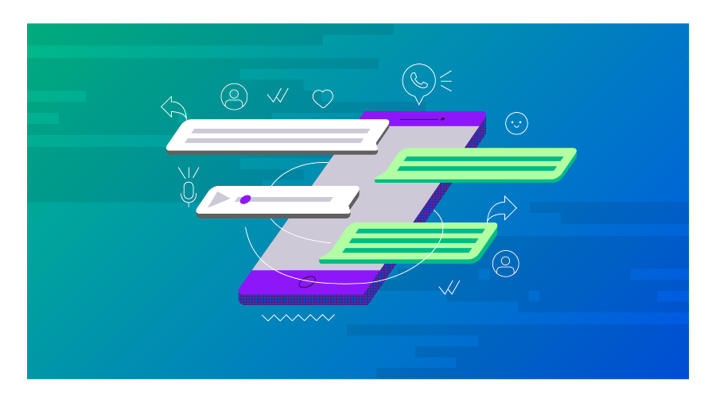

Verificação de duas etapas no Instagram
A ferramenta de verificação de duas etapas, no Instagram, permite que o usuário se proteja de possíveis tentativas de "hackeamento", dessa maneira, caso alguém tente entrar na sua conta, o Instagram pede que esse criminoso informe um código que será enviado para o celular cadastrado pelo usuário, impossibilitando, desse modo, a invasão da conta.

Formas de se proteger do Phishing
O Phishing é uma tática bastante utilizada para roubo de dados, no entanto, ainda é desconhecida para a maioria da população. Tal tática consiste principalmente no envio de e-mails com links suspeitos, no quais são pedidos informações pessoais do usuário, o remetente faz com que pareça ser de uma instituição séria, como um banco, facilitando com que o usuário caia no golpe .
